Branchés · Onze scènes du quartier, reliées par un même câble, de la plus
petite à la plus grande. Pas un classement : onze formats, onze façons d’écouter un
concert.
Un vendredi soir au Cours Julien, la musique sort de partout : d’un soupirail, d’une porte
entrouverte, d’une terrasse où quelqu’un a sorti une guitare. Le quartier compte plus de lieux
de concert que n’importe quel autre coin de Marseille, et presque tous tiennent dans un rayon
d’un quart d’heure à pied.
Pour s’y retrouver, on les a reliés d’un même câble, de la plus petite scène à la plus grande. Ce
n’est pas un classement : chaque format a ses plaisirs. Au début, on est quarante et le groupe
joue à deux mètres de vous. À la fin, on est 990 devant la scène. Entre les deux : le bar à
bières, le pub, la cave, le club. À vous de choisir où vous brancher.
01La toute
petite salleUne quarantaine de personnes
Les 9 salopards
Lieu associatif · concerts · expos · disques
On commence au plus près, dans la petite rue piétonne Crudère, à deux pas de la rue Vian. Les
9 salopards sont un lieu associatif : un centre culturel qui mélange
expositions, concerts, vente de disques, de livres et d’artisanat, avec l’envie de faire
connaître la scène artistique marseillaise.
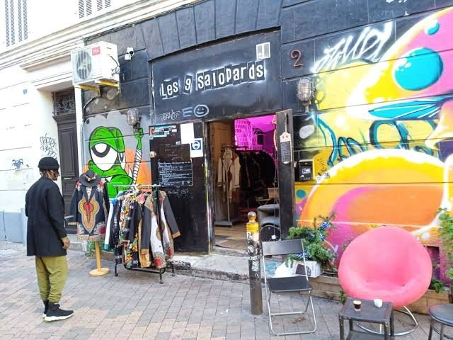
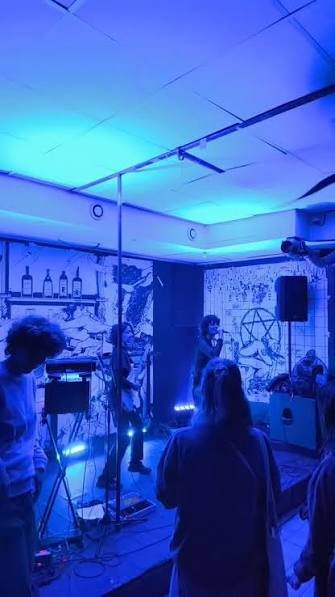
La devanture, rue Crudère · Un concert, à deux mètres de la scène
Une quarantaine de personnes, et le groupe joue à deux mètres de vous : impossible de
faire plus petit, et c’est tout l’intérêt. C’est l’une des adresses essentielles des concerts
du quartier, celle où passent les groupes locaux et les scènes alternatives, souvent pour
quelques euros.
De l’autre côté du cours, rue Estelle : on descend dans le Gouffre.
02L’ovniToute petite salle, plafond bas
Le Gouffre
Concerts perchés · programmation surprise
Au 32 de la rue Estelle, le Gouffre porte bien son nom : une salle basse de plafond, où
l’on se serre pour des concerts perchés, de ceux qu’on ne verra nulle part ailleurs. La
programmation est aléatoire, les groupes souvent inconnus, et c’est précisément ce qu’on vient
chercher.
Un avertissement, quand même : on ne sait jamais trop si le lieu existe encore. Avant d’y
aller, un coup d’œil au compte Instagram @zbeul_corp s’impose. Si la porte est ouverte, vous
aurez une histoire à raconter.
On traverse La Plaine jusqu’à la rue Saint-Pierre : une petite salle cachée dans un local de musiciens.
03Le
localPetite jauge
Leda Atomica
Rock · inclassable · fait maison
Le nom vient d’un tableau de Dalí, et il cache l’un des plus vieux groupes de rock de
Marseille. Leda Atomica est né dans les années 1980 autour de Phil Spectrum, puis s’est
transformé en collectif, avec son propre label, LAM. En 2001, la bande ouvre à deux pas de La
Plaine, rue Saint-Pierre, un lieu de travail pour toutes les musiques.
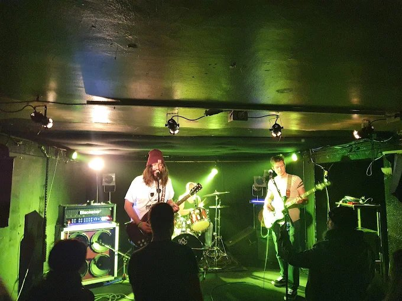
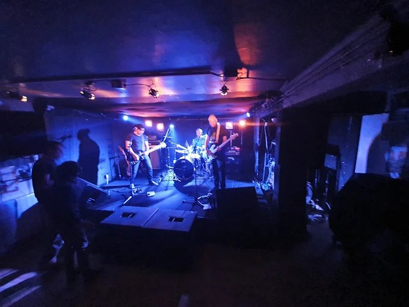
La petite salle, rue Saint-Pierre · Un trio sous les projecteurs bleus
C’est ce qui fait le charme de l’endroit : ici, des musiciens reçoivent d’autres
musiciens, et leur public, dans le lieu où ils répètent tous les jours. Salles de répétition,
studio d’enregistrement, petite salle de concert : les soirées y sont souvent atypiques,
et c’est exactement pour ça qu’on y va.
Retour rue Crudère, à quelques portes des 9 salopards : un bar à bières qui a fait de son fond de salle une scène.
04Le bar à
bièresEnviron 70 personnes
La Voie maltée
Bières · concerts · stand-up
Rue Crudère, derrière une devanture couverte de graffitis, La Voie maltée est d’abord un bar à
bières : des pressions, des bouteilles, des planches à partager et des tonneaux en guise
de mange-debout. Mais au fond de la salle, deux enceintes encadrent une petite estrade.
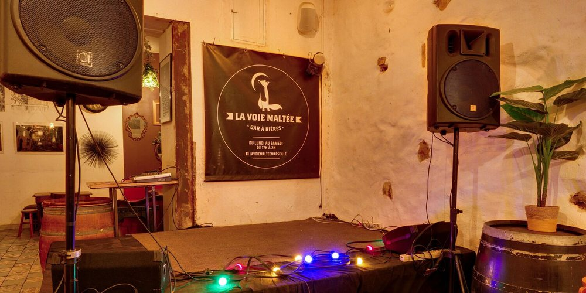
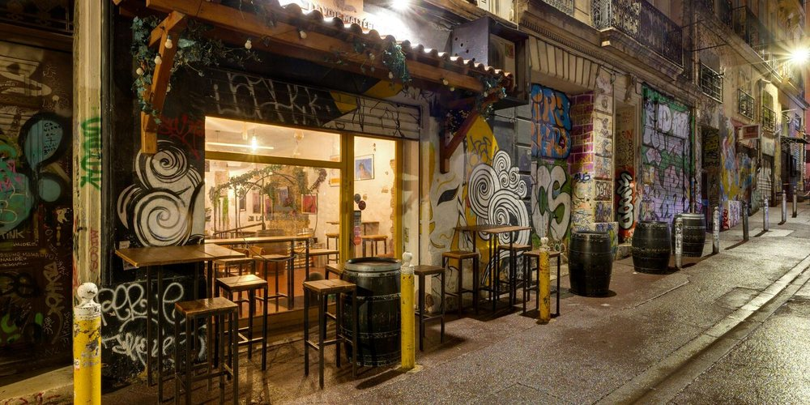
La scène, au fond du bar · La devanture, rue Crudère
Depuis quelques années, le bar tient l’une des programmations de concerts les plus régulières
du quartier. Environ 70 personnes, une ambiance de bar où l’on finit toujours par écouter le
groupe plutôt que la conversation. Et une fois par mois, la scène passe au stand-up.
Tout près, rue Vian : une scène, un billard, et des guitares qui saturent.
05Le
pubUne centaine de personnes
La Maison hantée
Blues · rock’n’roll · métal
Rue Vian, une façade rose, deux masques sculptés et une porte en bois qui a l’air de grincer.
La Maison hantée est là depuis plus de trente ans, et elle se présente elle-même comme une
maison de famille « hantée par ses souvenirs ». Dedans : un billard, un
baby-foot, des peintures aux murs et une cuisine généreuse, inspirée de celle de la mère du
patron.
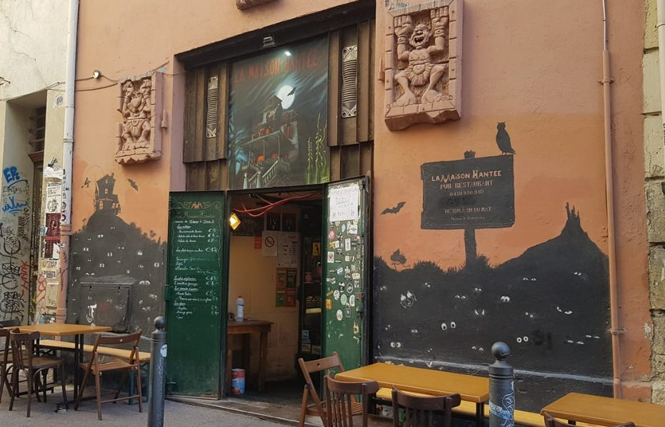
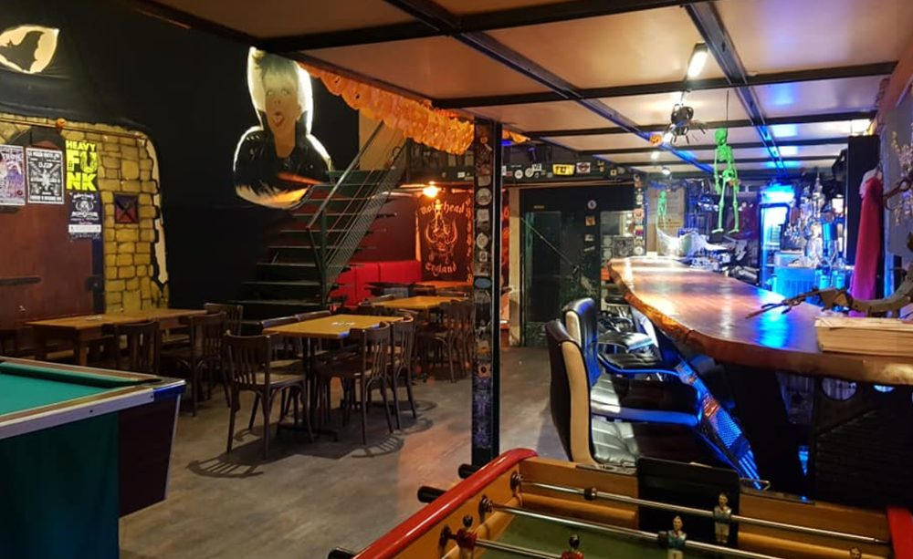
La façade, rue Vian · Le bar, le billard et le baby-foot
Côté musique, c’est un pub rock et métal : les concerts vont du blues au métal « bien
énervé », en passant par le rock’n’roll. Une centaine de personnes, une petite scène, une
petite terrasse. Le genre d’adresse où l’on entre pour une bière et où l’on reste pour le groupe.
Cap sur la place Jean-Jaurès, et on descend dans la salle du bas.
06La
caveSalle intime
L’Intermédiaire
Rock · ska · reggae · chanson
Sur la place Jean-Jaurès, L’Intermédiaire a tout du bistrot de quartier : un décor coloré,
des bières spéciales, des matchs retransmis. Mais l’essentiel se passe en bas, dans une salle
au plafond bas réservée aux concerts, l’une des meilleures de Marseille pour les groupes
alternatifs.
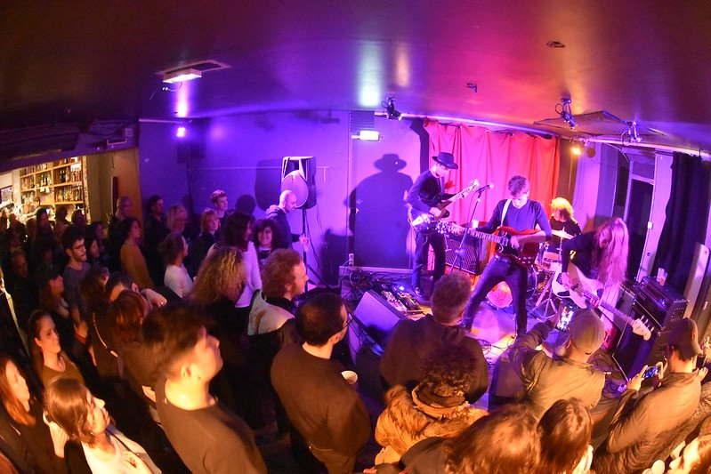
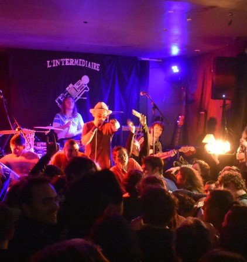
La salle du bas, un soir de concert · Sous la bannière
La programmation ne choisit pas son camp : rock, chanson, reggae, ska, musiques
occitanes, électro, DJ sets. Après quelques mois de travaux et un changement de propriétaire,
le lieu a rouvert avec le même principe : des concerts presque tous les soirs, et le
groupe à portée de main.
Retour sur le cours, au bord de la fontaine : de la bière brassée derrière une vitre, et 340 m² pour les spectacles.
07La
brasserie340 m² d’événements
La Brasserie communale
Microbrasserie · concerts · théâtre
Antoine, César et Loïc viennent de l’Équitable Café, un lieu marseillais connu pour sa
programmation culturelle. Avec la Brasserie communale, au bord de la fontaine du cours Julien,
ils ont tout réuni : un bar, un restaurant, une salle d’exposition et une microbrasserie,
visible derrière une vitre au fond de la salle.
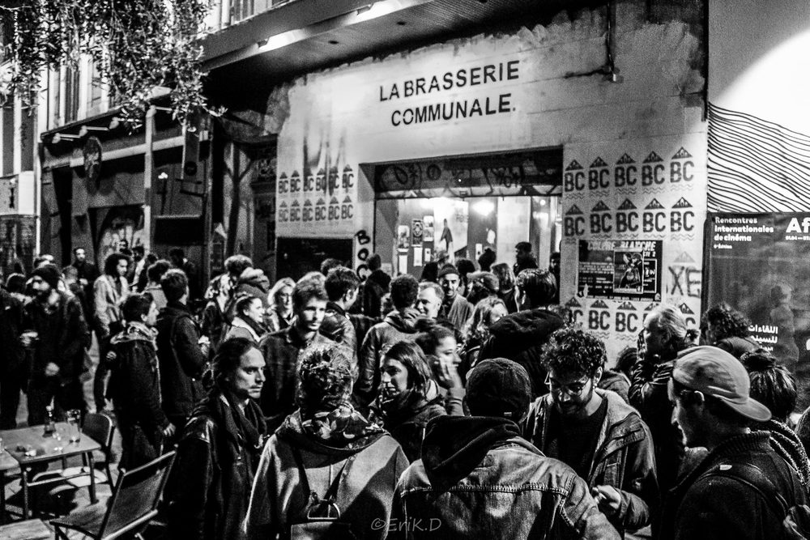
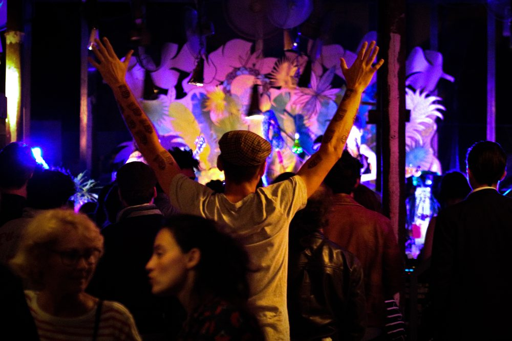
Devant l’entrée, un soir d’affluence · Les bras en l’air
Le cœur du lieu, pour ce qui nous occupe, ce sont les 340 m² dédiés aux événements :
concerts, performances, théâtre, projections, avec scène, son et vidéo. Et une fois le concert
fini, la bière de la maison n’a pas loin à voyager. Le trio a d’ailleurs ouvert ensuite un bar
à cocktails, La Soifferie, qu’on vous a fait visiter dans notre tournée des cocktails.
Place aux salles de concert au sens strict, avec billetterie et balances, à commencer par la place Paul-Cézanne.
08La
salleEnviron 150 m²
Le Molotov
Reggae · rock · soul · électro
Place Paul-Cézanne, l’ancien Balthazar est devenu le Molotov en décembre 2012. Environ
150 m², une vraie scène, une billetterie, et une programmation qui va du reggae à
l’électro. Pour beaucoup de Marseillais, c’est la salle du quartier, celle où l’on a
vu son premier concert sans parents.
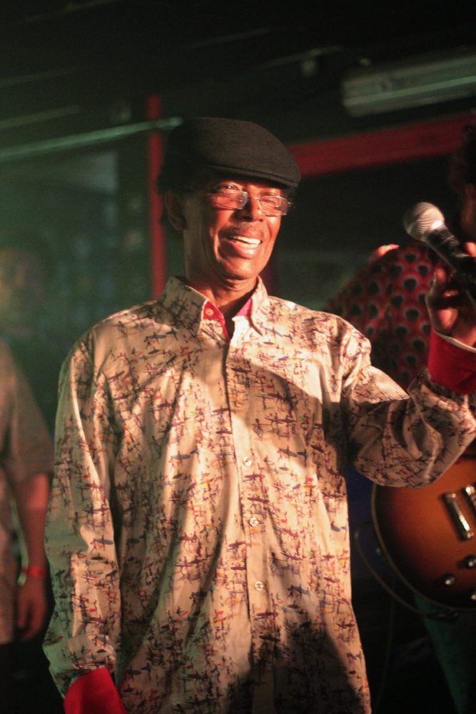
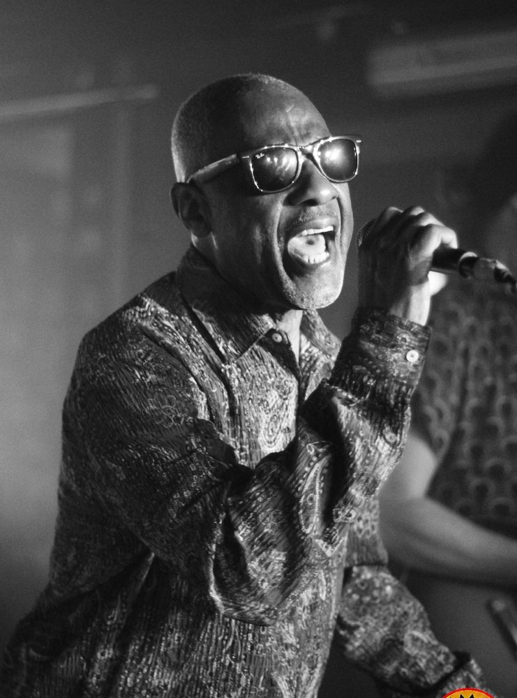
Tex, puis Rudy Mills, en live au Molotov en 2022
Le Molotov a failli disparaître : en 2016, la préfecture envisage une fermeture
administrative pour nuisances sonores. Une pétition réunit plus de 5 000 signatures en
moins de vingt-quatre heures. La salle est toujours là, et elle a même ouvert une petite
sœur, le Dodu, à la Belle de Mai.
Un pas hors du quartier, rue Ferrari : 270 places et quatre soirées par semaine.
09Le
club270 places
Le Makeda
Rap · électro · rock · boums
Pendant des années, le 103 rue Ferrari s’appelait le Poste à Galène. En 2019, une nouvelle
équipe, menée par Francine Ouedraogo Bonnot, le rebaptise Makeda, du nom de la reine de Saba.
Le lieu se veut convivial, citoyen et engagé, avec 270 places et quatre soirées par semaine.
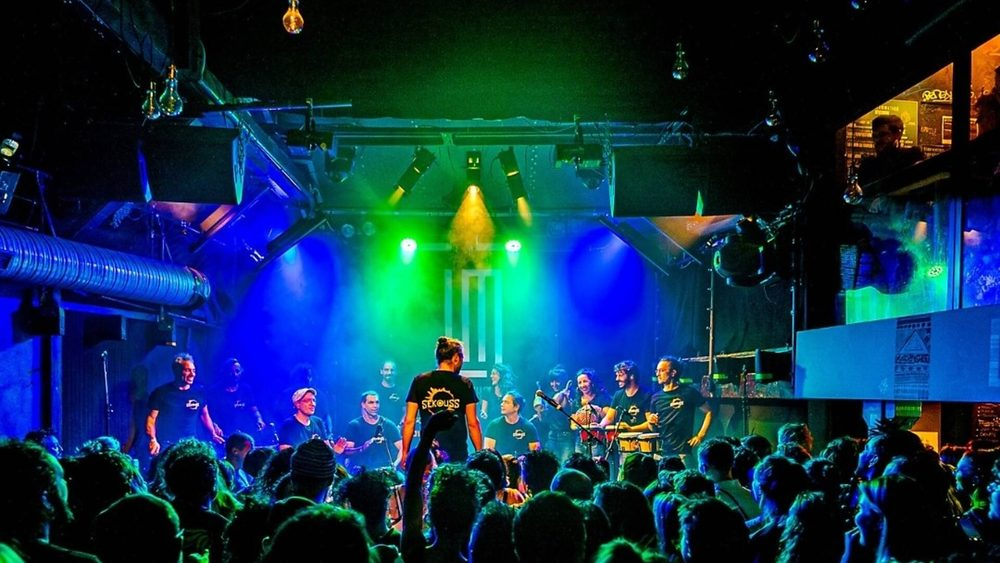
La scène du Makeda, salle pleine
La programmation ne connaît pas de frontière : rap, électro, rock, et des soirées qui ont
leurs fidèles. Gâter le coin, dont les recettes vont à une association qui aide les mineurs
étrangers isolés ; Rasputin, collectif queer et italo-disco ; et la Boum du samedi,
où l’on reprend au micro les tubes des années 1990 et 2000.
Retour au 39 cours Julien, où une salle vient de rouvrir.
10Le
tremplin280 places
Le Café Julien
Scène émergente · concerts · DJ sets
C’est l’adresse neuve de la liste, ou presque. Le Café Julien, la petite salle de l’Espace
Julien, a rouvert le 2 octobre 2026 après plusieurs mois de travaux. En fusionnant avec le
grand hall du bâtiment, sa jauge passe de 180 à 280 places. Une baie vitrée l’ouvre désormais
sur le cours Julien, l’acoustique a été refaite, et le bar est accessible aux fauteuils
roulants.
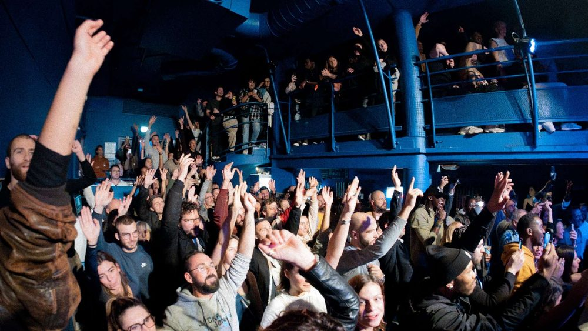
Les bras en l’air, à l’Espace Julien
L’idée, c’est d’être « le maillon manquant entre les scènes intimistes et les grandes
salles » : l’endroit où un groupe qui a rempli L’Intermédiaire peut passer à
l’étape suivante. Et le jeudi, de 10 h à 17 h, il ouvre en journée : expositions,
ateliers, radios locales en direct.
Depuis trente ans, l’Espace Julien fait vivre le cours au rythme des concerts. C’est la grande
salle du quartier : 990 places debout, 600 assises, des artistes venus du monde entier
et des groupes marseillais qui jouent leur plus gros concert. Et pourtant, la maison le
revendique : « Ici, artistes et public sont tout près. »
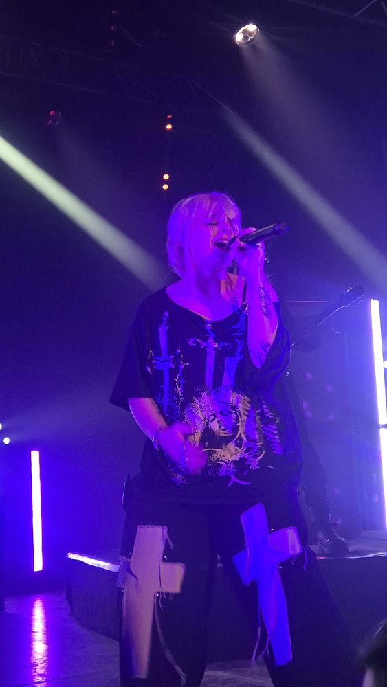
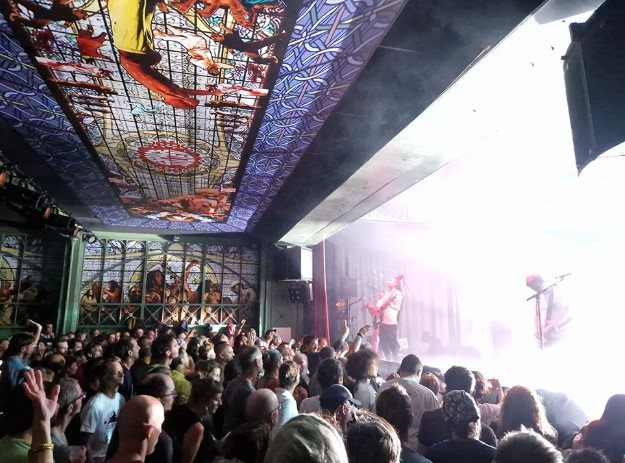
Théa en concert, 2026 · La salle comble, sous son plafond peint
Depuis 2023, la salle est gérée par La Responsabilité des Rêves, une coopérative de quatre
lieux culturels marseillais, parmi lesquels… le Makeda, croisé trois scènes plus haut. Dans le
quartier, la boucle est bouclée : les petites scènes font grandir les groupes, les
grandes les accueillent, et tout le monde se retrouve au comptoir après.
Les onze scènes sur la carte
Les numéros suivent l’ordre de l’article. Un clic sur un point vous ramène à la
scène.
Fin du câble
Onze scènes, un quartier, et toujours une prise libre
La programmation change toutes les semaines : le plus sûr reste de suivre les lieux sur leur
site ou leurs réseaux. Et pour l’avant ou l’après-concert, le Mag a déjà fait la tournée des bars à
cocktails.
Le quartier compte une dizaine de lieux : des lieux associatifs (Les 9 salopards, Le
Gouffre, Leda Atomica), des bars avec scène (La Voie maltée, La Maison hantée,
L’Intermédiaire, La Brasserie communale) et de vraies salles (Le Molotov, Le Makeda, le Café
Julien et l’Espace Julien).
Quelle est la plus grande salle de concert du Cours Julien ?
L’Espace Julien, au 39 cours Julien : 990 places debout, 600 assises. Le Café Julien,
dans le même bâtiment, accueille 280 personnes depuis sa réouverture en octobre 2026.
Où écouter du rock ou du métal au Cours Julien ?
La Maison hantée, 10 rue Vian, est un pub rock et métal depuis plus de trente ans :
concerts du blues au métal, billard et baby-foot. L’Intermédiaire, place Jean-Jaurès,
programme aussi beaucoup de rock alternatif.
Où voir un concert dans une petite salle au Cours Julien ?
Les 9 salopards, 2 rue Crudère, accueillent une quarantaine de personnes. Juste à côté, La
Voie maltée, bar à bières au 7 rue Crudère, programme des concerts réguliers pour environ 70
personnes. La Maison hantée, rue Vian, en reçoit une centaine.
Le Café Julien a-t-il rouvert ?
Oui, le 2 octobre 2026, après plusieurs mois de travaux. Sa jauge passe de 180 à 280 places,
une baie vitrée l’ouvre sur le cours Julien, et il accueille du public en journée le
jeudi.
Photos : Elyn (CC0) et Fred reggaelover (CC BY-SA 4.0), via Wikimedia
Commons ; La Voie maltée / Privateaser, La Maison hantée / Schlouk Map, La Brasserie communale,
l’Espace Julien, Time Out ; Cours Ju — Plaine.